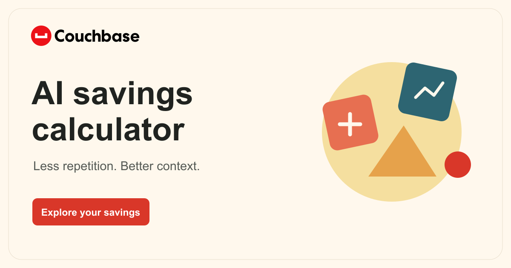
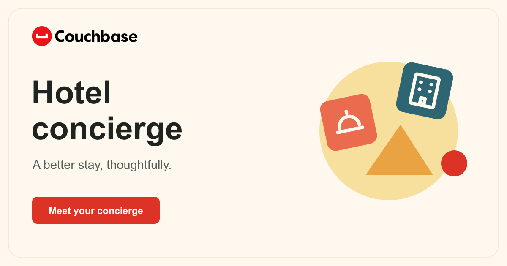
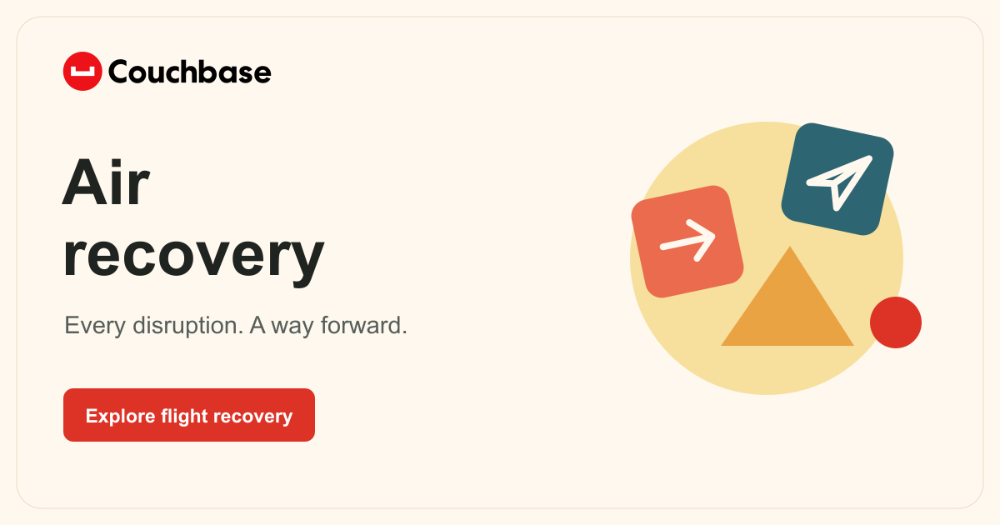

AI savings calculator
See how your workload could change your model costs.
Try thisSet your spend, choose a workload, compare the estimate.
INTERNAL DEMO LIBRARY
Three ways to explore Couchbase.
The shared skills that keep them consistent.
EXPLORE
Open it and try a scenario.

See how your workload could change your model costs.

Follow a guest request through checks, tools and a decision.

Watch a disruption turn into passenger messages and recovery options.
REVIEW TOGETHER
Leave feedback on a demo or skill, discuss the change, and keep each decision with its revision.
Updated November 12, 2026. Not available for team sign-in yet.
BUILD CONSISTENTLY
The shared look: fonts, colors, controls and layouts.
Fix one issue, then check the same pattern throughout.
Install both in Codex or Claude Code. Design sets the style; Pattern Repair checks matching components, screen sizes and live states.
Use couchbase-design and ui-pattern-repair. Keep our approved styling, check matching components, and verify phone, tablet and desktop layouts.
CONNECT AND TROUBLESHOOT
Reviewed November 11, 2026. Historical issues are labeled; current service health still needs a check.